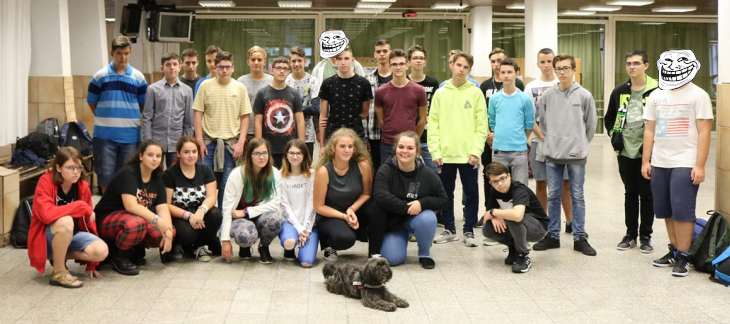
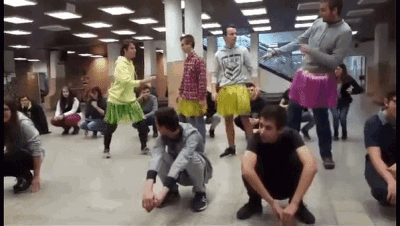

Rabina Roland (of.)
Ágoston Zsolt
Búzás Eleonóra
Fülöpné Sipos Annamária
Gábor Roland
Geiger Gabriella
Jéga Szabó Krisztina
Kiss Ágnes
Mák Balázs
Mező György
Mészáros Péter
Palatinszky Dániel
Papp Erika
Papp Zoltán Tibor
Schmidt Vilmos
Simon Tibor
Tóth Marietta
Vass Andrea
 Mi vagyunk a Neumann János Számítástechnikai Szakgimnázium 9.C osztálya. Az osztály többségének tetszik az iskola, de év eleje óta már ketten is elhagytak minket amit többen is terveznek. Az osztály év eleji teljes létszáma 30 volt, ami 28-ra csökkent. Legtöbbször a 233-as teremben vagyunk megtalálhatóak. Osztályfőnökünk Rabina Roland, aki nagyon szeret minket és ez fordítva is igaz. Mindenki nagyon szereti és érti a programozást, mindig lelkesen várjuk az órát, Mező tanárúr poénjain mindig szakad az osztály. Akiknek nem elég az óra anyaga, azok korrepetáláson tovább tanulhatnak. Gábor Roland nagyon kiemelkedő felkészítést tart az emelt matek csoportnak. A tesi órák nagyon élvezetesek, fárasztóak és izzasztóak.
 Az osztályban nagyon kellemes légkör szokott lenni. Senki nem köt bele senkibe. Ha bárki segítségre szorul, akkor egyből segítséget kap. Az osztály nem éppen a legaktívabb, de ha elvállal valamit, akkor azt rendesen meg is csinálja. Erre remek példa a Bisel környezetvédelmi verseny, amelyen Szekeres Ábel osztálytársunk vett részt és remek eredményeket ért el.